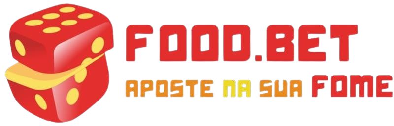

Bem-vindo ao "Foodbet", onde alimentamos sua paixão por comida com conveniência e diversidade. Somos uma plataforma de delivery de alimentos que combina a emoção dos sites de apostas com a satisfação gastronômica. Na nossa casa, cada prato é uma aposta ganha!
Matheus sempre teve um paladar requintado e uma visão empreendedora. Crescendo em uma família onde a comida era o centro das celebrações, ele desenvolveu um amor pela gastronomia desde cedo. Depois de anos trabalhando na indústria alimentícia, Matheus decidiu unir sua paixão pela comida com sua afinidade pelo mundo das apostas, dando origem ao "Foodbet".
Nego Doce é um autodidata da tecnologia, sempre fascinado pela ideia de como a inovação pode transformar indústrias inteiras. Com um histórico em desenvolvimento de software e análise de dados, ele viu uma oportunidade única de combinar sua expertise com a paixão pela comida de Matheus. Juntos, eles fundaram o "Foodbet", onde Nego Doce lidera a equipe técnica para criar uma experiência de usuário impecável.
Kauã sempre teve um faro aguçado para negócios e uma habilidade excepcional para entender as tendências do mercado. Com uma carreira sólida em consultoria gastronômica, ele traz uma perspectiva única para o "Foodbet", garantindo que cada prato oferecido seja uma aposta segura para satisfazer os mais exigentes paladares.
O "Foodbet" nasceu da paixão compartilhada de Matheus, Nego Doce e Kauã por comida e inovação. Cada um trazendo suas habilidades únicas para a mesa, eles se uniram com um objetivo comum: criar uma plataforma que não apenas alimentasse, mas também inspirasse. Desde o lançamento, temos trabalhado incansavelmente para trazer uma experiência de entrega de alimentos totalmente nova, onde os clientes podem se entregar à emoção de escolher entre uma variedade de pratos deliciosos, sabendo que estão apostando em uma experiência gastronômica verdadeiramente excepcional.